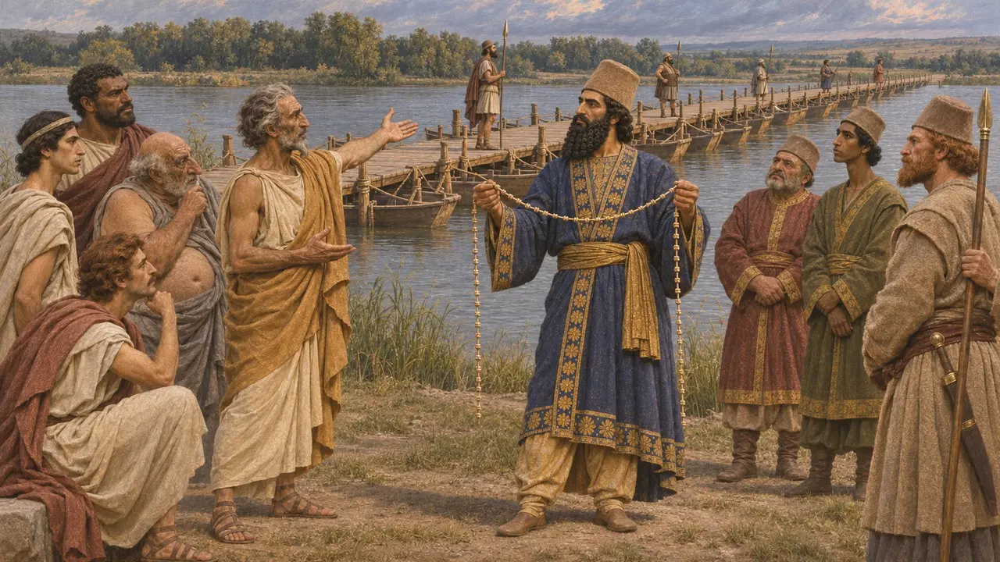
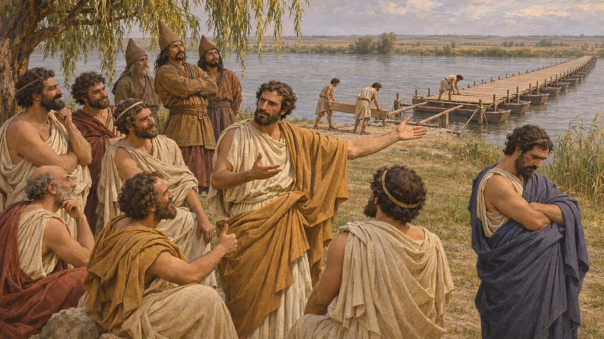
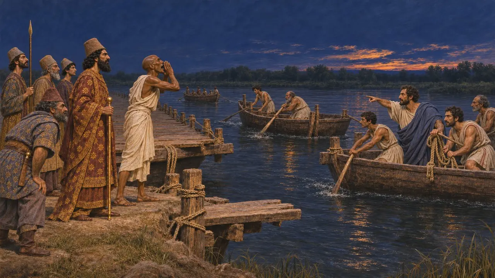
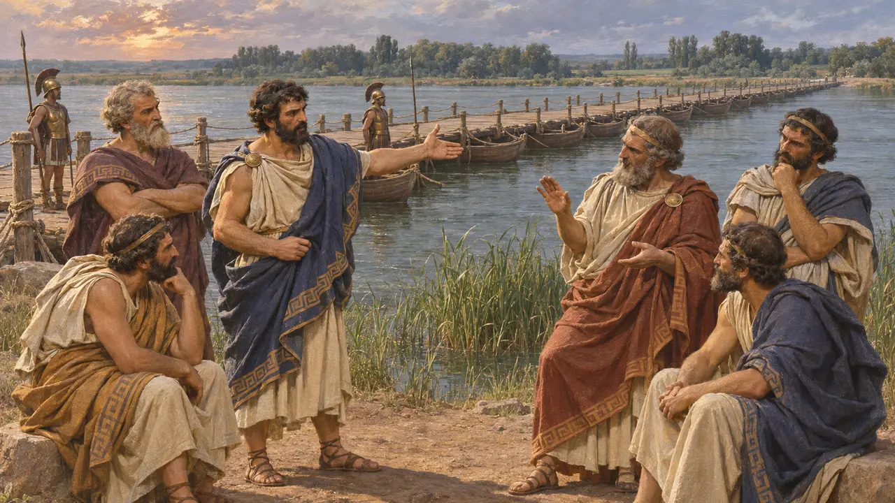
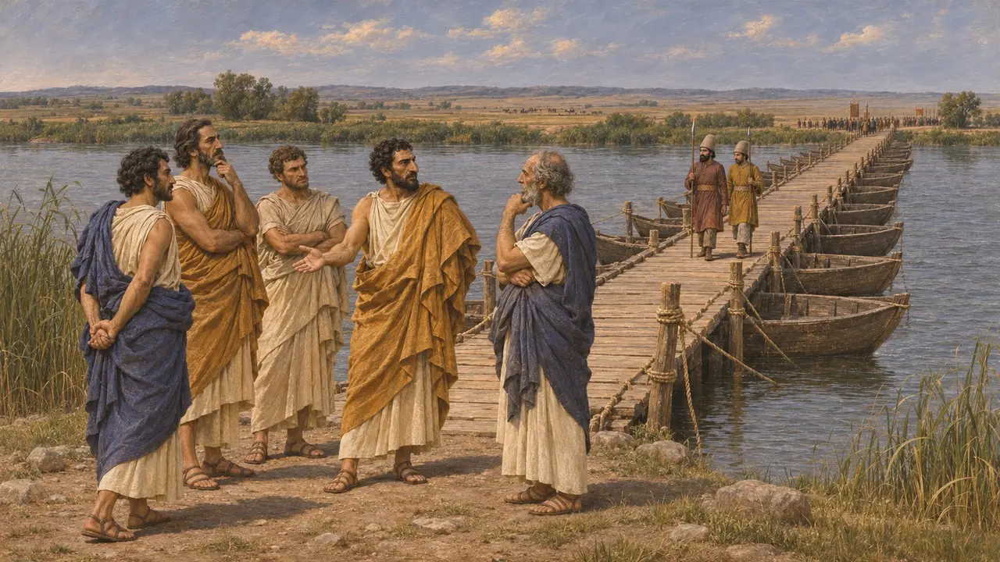

Enciclopedia › Batallas y acontecimientos

El debate en el puente del Istro
Consejo de los tiranos griegos en el puente del Danubio, campaña escita, hacia 513 a. e. c.
En el juego: Nivel 6: El Puente de Barcas
Hacia el 513 a. e. c., mientras Darío hacía campaña contra los escitas al norte del Istro (Danubio), los contingentes griegos de Jonia y del Helesponto custodiaban el puente de barcas que era su camino de regreso. Heródoto cuenta cómo sus tiranos debatieron si romperlo y dejar aislado al Rey, y cómo Histieo de Mileto los persuadió de conservarlo. La historia moldeó la visión griega posterior de la lealtad jonia y de los hombres que más tarde incitarían la revuelta jonia.
En el juego: El juego sigue a Heródoto: Coes aconseja conservar el puente, Milcíades insta a romperlo e Histieo lo salva. Todo el episodio solo se conoce por Heródoto, y el papel de Milcíades puede ser una historia ateniense posterior.

Coes aconseja al Rey
Relato antiguoHeródoto cuenta que, cuando el ejército cruzó el Istro, Darío ordenó a los jonios romper el puente y marchar con él. Coes, general de los hombres de Mitilene, aconsejó dejarlo en pie bajo la guardia de sus constructores, como vía de regreso por si no se encontraba a los escitas o no se los lograba llevar a batalla, y Darío estuvo de acuerdo. Hizo sesenta nudos en una cuerda y mandó a los jonios deshacer uno cada día, y volver por mar a su patria si él no había regresado cuando se acabaran los nudos.
Herodotus 4.97-98

El voto de los tiranos
Relato antiguoLos escitas llegaron al puente dos veces, la segunda una vez transcurridos los sesenta días, e instaron a los jonios a romperlo y marcharse. Heródoto cuenta que Milcíades de Atenas, tirano del Quersoneso, quería aceptar. Histieo de Mileto respondió que cada tirano gobernaba su ciudad gracias al poder persa y que, sin él, caería ante el gobierno popular. Los demás se pusieron de su parte, rompieron solo el tramo más cercano a la orilla escita y dijeron a los escitas que destruirían el resto.
Herodotus 4.133-139

El regreso del Rey y las recompensas
Relato antiguoDarío llegó al río de noche y encontró que el extremo septentrional había desaparecido. Heródoto dice que un egipcio de voz muy potente llamó a Histieo, quien trajo de vuelta las naves y restableció el paso. Más tarde, en Sardes, el Rey recompensó a ambos hombres: Coes pidió ser nombrado tirano de Mitilene, e Histieo recibió Mircino, en Tracia. Heródoto añade un veredicto escita según el cual los jonios eran los más cobardes de los hombres libres y los más devotos de los esclavos.
Herodotus 4.140-142; 5.11

¿Lo propuso realmente Milcíades?
En disputaLos historiadores dudan de esta parte del relato. Milcíades fue juzgado más tarde en Atenas por su tiranía en el Quersoneso y absuelto, y muchos piensan que la historia de su propuesta surgió para presentarlo como un viejo enemigo de Persia. Otros señalan que parece haberse quedado en el Quersoneso, un vasallo persa, hasta aproximadamente el 493 a. e. c., aunque el relato de Heródoto sobre esos años es confuso. La fecha de la campaña también es incierta; lo habitual es calcularla hacia el 513 a. e. c.
Herodotus 6.40; 6.104; P. Briant, From Cyrus to Alexander, 2002

El silencio del registro persa
En los documentosNingún texto persa describe el puente ni el debate. La inscripción de la tumba de Darío en Naqsh-e Rostam enumera entre sus pueblos sometidos a los saka de más allá del mar, a quienes muchos estudiosos vinculan con esta campaña europea, aunque algunos los sitúan en otra parte. El registro persa muestra una pretensión sobre tierras al otro lado del agua, pero la decisión de los griegos en el puente solo se conoce por la tradición griega.
DNa
Fuentes
- Herodotus 4.97-98; 4.133-142
- Herodotus 5.11; 6.40; 6.104
- DNa
- P. Briant, From Cyrus to Alexander, 2002
- M. Waters, Ancient Persia, 2014